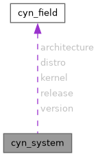

- Generated by
 1.15.0
1.15.0
|
libcyn
Read-Only Linux system information library
|
System information. More...
#include <cyn.h>

Data Fields | |
| cyn_field | kernel |
| cyn_field | architecture |
| cyn_field | release |
| cyn_field | version |
| cyn_field | distro |
System information.
| cyn_field cyn_system::architecture |
Architecture (e.g., "x86_64").
| cyn_field cyn_system::distro |
Distribution name (e.g., "Fedora Linux 39").
| cyn_field cyn_system::kernel |
Kernel name (e.g., "Linux").
| cyn_field cyn_system::release |
Kernel release (e.g., "6.5.0-14-generic").
| cyn_field cyn_system::version |
Kernel build version string.